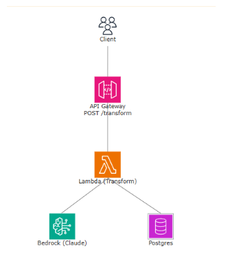
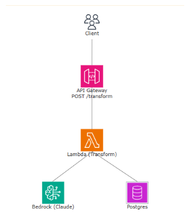

During my 4-month co-op at Health Espresso from May to August 2025, I had the chance to work in full-stack development, including my initial role in QA automation. I worked on features that made it to production, ranging from Flutter mobile apps to React web interfaces and AWS serverless setups. In the startup, I built three features: a profile editing tool in Flutter, a patient summary upload drawer in React with TypeScript combined with AWS Bedrock summarizing it, and Python Automated QA tests with Selenium. The experience taught me how to handle changing priorities in a messy startup space, write code to handle LLMs in bedrock, and deliver value when instructions aren't clear.
QA Automation & SWE @ Health Espresso · 4-month co-op · Flutter/Dart · React/TS · AWS Lambda/Bedrock · Git
Abstract/Introduction
The Employer
Health Espresso is a Canadian health technology startup based in Oakville, Ontario, although it is WFH. The company provides a health care platform designed around the principle of “One Patient, One Record, One Care Plan.” Its products include an electronic medical record system, patient engagement apps, secure messaging and video conferencing, remote monitoring tools, and automation features to reduce administrative work. The company is small, with a team of about 16 employees.
Goals → Outcomes
Learn how to use automated testing tools like Selenium in a real workplace setting, and build QA automation skills.
Explore new areas of development beyond QA, such as mobile, frontend, and backend tasks.
Improve technical communication by participating in demo sessions and adjusting language for the audience depending on who it is.
Learn how to adapt to a fast-paced or unclear environment by tracking tasks and clarifying priorities when vague.
Decide whether I want to continue with QA work or focus more on software development.
Set up the environment and experimented with Selenium. Full integration wasn’t reached, but I learned more about automation.
Contributed well beyond QA: shipped Flutter profile editing, a React upload drawer, and an AWS Lambda + Bedrock pipeline.
Led demos. Wrote clearer documentation and PR descriptions. Feedback in daily meetings confirmed my communication helped teammates understand progress and struggles.
Kept a running task log and regularly compared plans to shifting priorities. When instructions were vague, I clarified assumptions in Slack and communicated progress so decisions were documented. This let me finish tasks on time even when scope or direction changed last minute.
Realized I prefer software development over pure QA. Still value QA, but see it as a supporting skill, not my main focus.
Job Description
At Health Espresso, my role expanded from QA automation into full-stack software development, where I contributed to multiple production features and workflow improvements:
Flutter Profile & Patient Info Editing
I built an editable profile flow in the company’s mobile app using Flutter with BLoC state management. The feature included live validation for fields such as name, phone number, address, and gender. I also implemented reset logic to prevent data loss on navigation, added contextual snackbar feedback, and handled translation support for multi-language users.
React/TypeScript Patient Summary Upload Drawer
On the web platform, I developed a file upload drawer for patient summaries using React and Redux Toolkit. This included PDF/image validation, duplicate-upload prevention, error boundaries for graceful failure, and safe state handling. I also resolved complex merge conflicts across feature branches and documented the drawer’s behavior for teammates.
AWS Lambda + Bedrock Structured Data Extraction
I designed and deployed an AWS Lambda pipeline that called Amazon Bedrock’s Titan model to extract structured data from uploaded patient summaries. To make it production-ready, I built a regex sanitizer to strip unwanted formatting, schema validation to reject malformed responses, and retry logic with exponential backoff. This turned unpredictable model output into clean, consumable JSON for downstream services.
QA Automation & Development Workflow Improvements
I contributed Selenium smoke tests for core user flows, built PR templates that improved review turnaround times by ~60%, and standardized Git workflows. By reducing PR size and improving commit practices, I helped speed up the development cycle and reduce merge conflicts.
Technologies Used
- Flutter Project: Dart, Flutter, BLoC
- Web Project: React, TypeScript, Redux Toolkit
- Backend Project: AWS Lambda, Amazon Bedrock Titan, JSON Processing, Regex, CI/CD
- QA/Workflow: Selenium, Git/GitHub, E2E Testing

 

Conclusion
Overall, my work term at Health Espresso was an enriching experience that allowed me to grow both technically and professionally. I successfully completed 3-4 challenging projects, enhanced my problem-solving abilities, and gained valuable experience into the startup space. The skills and experiences from this term will definitely benefit my future goals in QA and software development.
Acknowledgments
Thanks to Omar for Flutter guidance, Jarnell for onboarding us onto QA, AJ for AWS/Lambda reviews, Hussain (The other co-op student) for working alongside me and making it an amazing experience, and Amy for creating a good environment for us to be able to learn and grow professionally. Lastly, thank you to the entire Health Espresso team for making it an amazing learning experience.